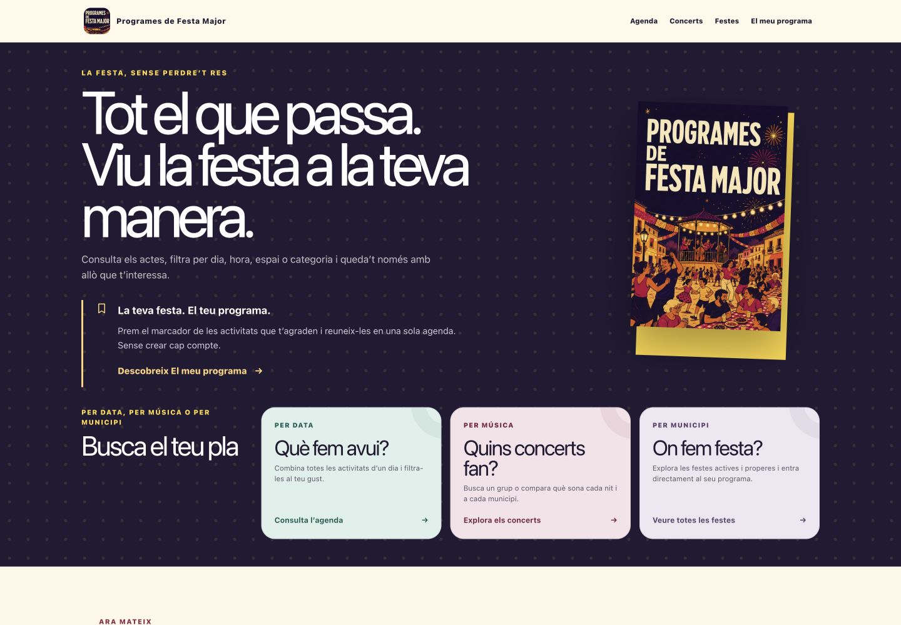

Current role
Software Architect
· Senior Staff Engineer
I work across architecture, implementation and delivery, weighing integration, reliability and security choices against product needs and business constraints.
Software architecture · Engineering leadership · Product thinking
I'm Xavier, a software architect and senior staff engineer with experience leading engineering teams and owning payment platforms.
I connect architecture, hands-on engineering and product decisions to help teams build software they can operate and evolve.
Explore my workExperience
My perspective comes from working across software, teams and the platforms they build.
Current role
I work across architecture, implementation and delivery, weighing integration, reliability and security choices against product needs and business constraints.
The path here
My background includes hands-on software engineering in payments, e-commerce and telecommunications, leading development teams and owning payment platforms. Product Owner and Scrum Master responsibilities have added a perspective that runs from priorities through to delivery.
Selected work
Three different ways I put engineering and product thinking into practice.
A service can recover enough to answer a few requests before it can handle its usual traffic.
I've proposed an optional CircuitBreaker policy that brings traffic back gradually. Each phase combines a target percentage, a minimum duration and completed-call health checks. When health deteriorates, STEP_BACK can reduce admission to the preceding phase.
Keep standard recovery as the default. Make gradual recovery opt-in, preserve the public HALF_OPEN state and expose additional recovery metrics.
The separate lab lets you trigger failures, change traffic and recovery settings, and compare standard and gradual behaviour in local Prometheus/Grafana dashboards.
Read the proposalTarget admission25%
Public stateHALF_OPEN
A 25% admission target, with the public state still HALF_OPEN.
An independent product that turns official festival programmes into a searchable agenda across municipalities.

The problem
Programmes are spread across places and documents. Finding the activities that fit your plans takes more work than it should.
The product decision
Bring discovery into one agenda. Let people filter activities, explore concerts and build their own programme without creating an account.
Product thinking, information design and software engineering around an everyday need.
Run OpenSSL with its FIPS provider, with the build choices made explicit.
Runtime and provider versions are independently configurable. Source downloads are verified, and automated checks exercise the resulting installation and random generation.
Source & usagedocker run --rm ghcr.io/xcapdevila/openssl-fips \
"openssl rand -provider fips -base64 32"Using a FIPS provider does not by itself establish a validated deployment. The project documents that distinction.
Perspective
Architecture reaches beyond a diagram. It shapes how software is delivered, operated and changed—and how people work together.
Understand the constraints, explain the alternatives and connect technical choices with product needs and business consequences.
Failure behaviour, observability, security and maintainability belong in the decisions made while building a system.
Technical direction, engineering practices and shared understanding help people make decisions and carry them through.
About
I like building things, understanding the business behind them, and helping people grow.
I'm interested in practical uses of AI, business development and entrepreneurship. Personal projects like Programes de Festa Major are a way to explore those interests through a real product. I'd also like to mentor engineers, sharing experience and helping them develop their own judgement.
Computer Engineering at UOC · thePowerMBA programme
Trail running, cycling, hiking, skiing, music and travel.
Contact
Architecture, engineering leadership, payments—or a product idea taking shape.
Message me on LinkedIn Find me on GitHub